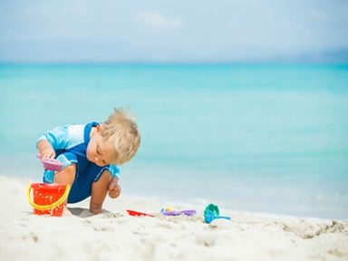
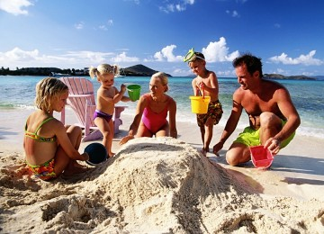
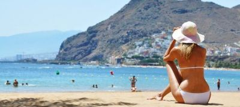

|

|
||
|---|---|---|

|
 |
Сияет солнце, воды блещут,
На всем улыбка, жизнь во всем,
Деревья радостно трепещут,
Купаясь в небе голубом.
Поют деревья, блещут воды,
Любовью воздух растворен,
И мир, цветущий мир природы,
Избытком жизни упоен.
Но и в избытке упоенья
Нет упоения сильней
Одной улыбки умиленья
Измученной души твоей...
Смотри, как роща зеленеет,
Палящим солнцем облита,
А в ней какою негой веет
От каждой ветки и листа!
Войдем и сядем над корнями
Дерев, поимых родником, —
Там, где, обвеянный их мглами,
Он шепчет в сумраке немом.
Над нами бредят их вершины,
В полдневный зной погружены, —
И лишь порою крик орлиный
До нас доходит с вышины.